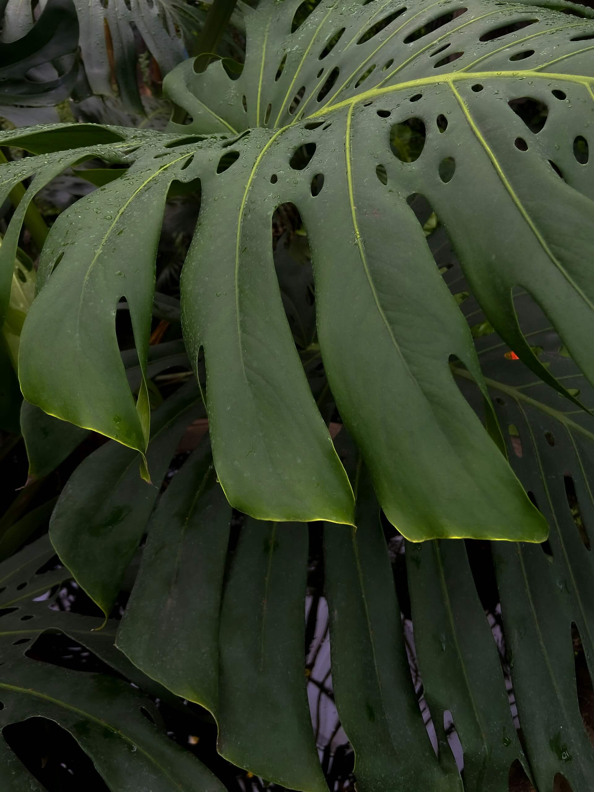

The
Movement
Game
Design
Home
Suggestions?
Plants
Attribution
Attribution
Images
Pierre Chatel on Unsplash
Rowan Heuvel on Unsplash
Jaap Straydog on Unsplash
Behzad Ghaffarian on Unsplash
Orkhan Farmanli on Unsplash
 Sofia Velgosh on Unsplash
Fonts
Archivo: Omnibus-Type on Google Fonts
Bitter: Sol Matas on Google Fonts
Palette
Generated using collage of images above with coolors.co
 Jaap Straydog on Unsplash
Jaap Straydog on Unsplash Behzad Ghaffarian on Unsplash
Behzad Ghaffarian on Unsplash Orkhan Farmanli on Unsplash
Orkhan Farmanli on Unsplash